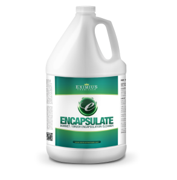

Anders Jönsson
It's a good tool for creating specifications / tests
var pi = function(){
return 3.14;
}
describe('pi specification', function(){
it('should return correct value', function(){
var result = pi();
expect(result).toBe(3.14);
});
});
describe('...', function(){
beforeEach(function(){
});
it('...', function(){
})
});
afterEach(...) - yeah you have it...
but you should never use it
Use jasmine.createSpy('name') or spyOn(obj, 'function')
var mail = {};
mail.send = jasmine.createSpy('send');
mail.send();
expect(mail.send).toHaveBeenCalled();
var mail = {};
mail.send = jasmine
.createSpy('send')
.andReturn(true);
var result = mail.send();
expect(result).toBeTruthy();
The "run" button looks nice, but it doesn't work...
See your libs as external dependencies, remove them from your test. E.g. use spy's instead of Zepto/jQuery/etc.
Encapsulate concepts in the view in the same way as you should have done in the controller / model / route

Warning, the demo might be a bit overwhelming if you have never seen / done TDD and Jasmine.JS before
(but it's on github if you want to check it out later)